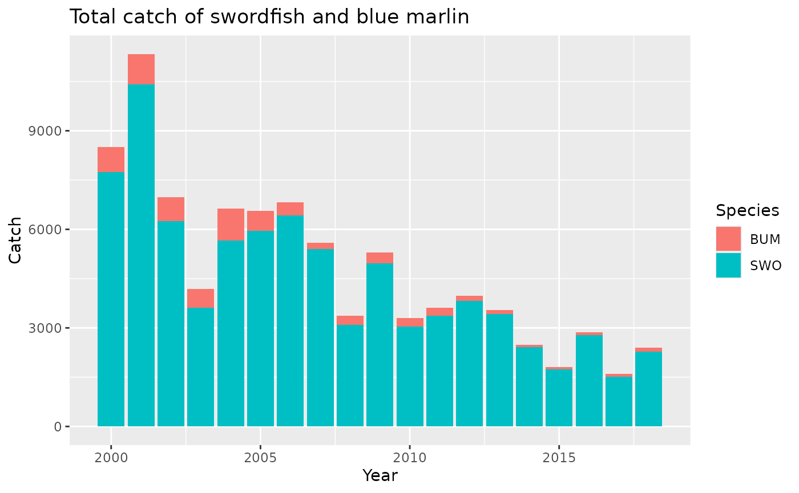

Data formatting
Elizabeth A. Babcock
2026-11-22
Data_Formatting.RmdThe BycatchEstimator package assumes that there are two data sets, read into R as either data frames or tibbles:
A sample of the fishery from, for example, an observer program or observations at fishing ports, hereafter called the observer data. This dataset must have rows corresponding to fishing operations (e.g. sets) or trips, and columns for the total effort (e.g. number of hooks, number of fishing hours), as well as any important stratification variables (Year, spatial area, gear type, season). Ideally, this data should be a random or stratified random sample, and should be representative of the fishery.
A complete record of the effort in the fishery, from a logbooks, landing records, or other sources. This dataset must include total effort, and the same stratification variables as the observer data. This dataset can be in the same format as the logbook data (one row per trip or set), or can optionally be aggregated (e.g. on row per combination or Year, season area, etc. )
Many fisheries datasets are not in the correct format for analysis and require some data manipulation. For example, they may be “long” format, where each set has a new row for each species caught , like this:
| Year | Trip | Set | Species | Catch |
|---|---|---|---|---|
| 2001 | AB1001 | 1 | BUM | 1 |
| 2001 | AB1001 | 1 | SWO | 5 |
| 2001 | AB1001 | 2 | SWO | 9 |
| 2001 | AB1001 | 3 | BUM | 1 |
| 2001 | AB1001 | 3 | SWO | 7 |
Long format is efficient for storing data, but it will not work with the estimation methods. The data must be converted to “wide” format, like this.
| Year | Trip | Set | BUM | SWO |
|---|---|---|---|---|
| 2001 | AB1001 | 1 | 1 | 5 |
| 2001 | AB1001 | 2 | 0 | 9 |
| 2001 | AB1001 | 3 | 1 | 7 |
This is the same information, but now with one row per set, and one column per species, with zeros for sets that caught no blue marlin (BUM).
The following shows several methods for converting between wide and several kinds of long format in R tidyverse (Wickham et al. (2019)).The topics covered are converting between wide and long, aggregating by counting or summing over rows, and combining multiple datasets with left_join. You may not need all, or any, of these methods depending on the format of your data, but they are all here in case any of them are useful.
We will use an example dataset from a simulated longline fishery from the BycatchEstimator package.
This first chunk opens the tidyverse and BycatchEstimator libraries and makes a simplified version of the logbook data for the purposes of the tutorial.
library(tidyverse)
library(BycatchEstimator)
obsdat<-LLSIM_BUM_Example_observer%>%
dplyr::select(trip,Year,fleet,hooks,sets,season,area,SWO,BUM) %>%
filter(Year>1999)The functions for converting between wide and long format are called pivot_wider and pivot_longer. For linear models, including in BycatchEstimator, data should be in wide format, meaning one row per sample unit (e.g. set or trip). The ggplot function prefers long format, so you often need convert between long and wide.
The first code chunk converts the LLSIM observer data from long format to wide format. The original wide format data has columns called “SWO”, “BUM” that include the catch of swordfish and blue marlin, respectively. The pivot_longer function will make a new column called “Species” to hold the values “SWO” and “BUM”, which are the names of the columns being “pivoted”. The values in those columns will go in a column named “Catch”. See the help file for pivot_longer for the syntax. Note that the names of the new columns have to be a character string (i.e. in quotes) because they are not defined in the dataframe.
?pivot_longer
obsdatLong<-pivot_longer(obsdat,
cols=c(SWO,BUM),
names_to="Species",
values_to="Catch")The new dataset is longer because each trip now has two rows, one for each species. All other columns have been replicated.
dim(obsdat)## [1] 2147 9
dim(obsdatLong)## [1] 4294 9
head(obsdatLong)## # A tibble: 6 × 9
## trip Year fleet hooks sets season area Species Catch
## <chr> <dbl> <dbl> <dbl> <dbl> <dbl> <chr> <chr> <dbl>
## 1 101.2000.6.1.25.-80 2000 1 5.10 6 2 N SWO 0
## 2 101.2000.6.1.25.-80 2000 1 5.10 6 2 N BUM 0
## 3 101.2001.10.1.25.-80 2001 1 0.8 1 4 N SWO 0
## 4 101.2001.10.1.25.-80 2001 1 0.8 1 4 N BUM 1
## 5 101.2001.11.1.30.-70 2001 1 0.4 1 4 N SWO 2
## 6 101.2001.11.1.30.-70 2001 1 0.4 1 4 N BUM 0This is now the right format for making a ggplot, for example:
ggplot(obsdatLong,aes(x=Year,y=Catch,fill=Species))+
geom_col()+
ggtitle("Total catch of swordfish and blue marlin")
This kind of long format is quite common in input data from observer programs, scientific surveys, etc. If there is exactly one row per species per set, we can pivot from long to wide using pivot_wider. The input names_from is the column containing the categorical variables which will be used to give names to the new columns, and values_from will be the values in the new columns (note: no quotes because these are existing columns). The input values_fill optionally specifies that, if there is no row for a species in a set, a zero will be filled in.
?pivot_wider
obsdatWide<-obsdatLong %>% pivot_wider(names_from=Species,
values_from=Catch,
values_fill=0) This only works with exactly one row per species and sample unit. In the case where there might be more than one catch record per species and sample unit, you may need to add them using group_by() %>% summarize().The group_by %>% summarize syntax removes all variables not mentioned explicitly in group_by or summarize, so we need to mention them all to keep them. Finally, I will use ungroup to remove the grouping because grouping can cause problems later when using the dataframe for other purposes. This aggregated data can then be used in the pivot_wider function. This dataset doesn’t need this step, but here is the code in case you need it.
obsdatLongAgg<-obsdatLong %>% group_by(trip,Year,fleet,hooks,sets,Species) %>%
summarize(Catch=sum(Catch))%>%
ungroup()
dim(obsdatLongAgg)## [1] 4294 7
dim(obsdatLong)## [1] 4294 9This made no change in the example data, because the data were already aggregrated.
Another common data format, for example when the data include fish lengths, has a separate row for each individual fish. The next chunk uses the uncount function to make a dataset with one row per fish, so we can see how to aggregate it into the format we need.
## [1] 90882 8
head(obsdatUncount)## # A tibble: 6 × 8
## trip Year fleet hooks sets season area Species
## <chr> <dbl> <dbl> <dbl> <dbl> <dbl> <chr> <chr>
## 1 101.2001.10.1.25.-80 2001 1 0.8 1 4 N BUM
## 2 101.2001.11.1.30.-70 2001 1 0.4 1 4 N SWO
## 3 101.2001.11.1.30.-70 2001 1 0.4 1 4 N SWO
## 4 101.2002.11.1.25.-70 2002 1 4.19 14 4 N SWO
## 5 101.2002.11.1.25.-70 2002 1 4.19 14 4 N SWO
## 6 101.2002.11.1.25.-70 2002 1 4.19 14 4 N SWOWe now have a very long dataset in which there is one row per individual fish and no Catch column. For example, the 2 swordfish caught in trip 101.2001.11.1.30.-70 are now in row 2 and 3, with “SWO” in the Species column.
To get this back to wide format for running linear models, we can group the data by trip and species, using group_by, and count the number of rows (which is the number of fish) using the n() function in the summarize function.
obsdatRegroup<-obsdatUncount %>% group_by(trip,Year,fleet,hooks,sets,Species) %>%
summarize(Catch=n())%>%
ungroup()This dataset now has a Catch column with counts of swordfish and blue marlin
head(obsdatRegroup)## # A tibble: 6 × 7
## trip Year fleet hooks sets Species Catch
## <chr> <dbl> <dbl> <dbl> <dbl> <chr> <int>
## 1 101.2001.10.1.25.-80 2001 1 0.8 1 BUM 1
## 2 101.2001.11.1.30.-70 2001 1 0.4 1 SWO 2
## 3 101.2002.11.1.25.-70 2002 1 4.19 14 SWO 22
## 4 101.2002.5.1.25.-85 2002 1 1.6 2 SWO 11
## 5 101.2003.4.1.25.-85 2003 1 2.65 3 SWO 5
## 6 101.2006.6.1.25.-85 2006 1 3.22 4 BUM 1We can now pivot wider to get in the correct format for linear models.
obsdatRegroupWide<-obsdatRegroup %>% pivot_wider(names_from = Species,
values_from = Catch,
values_fill = 0)
head(obsdatRegroupWide)## # A tibble: 6 × 7
## trip Year fleet hooks sets BUM SWO
## <chr> <dbl> <dbl> <dbl> <dbl> <int> <int>
## 1 101.2001.10.1.25.-80 2001 1 0.8 1 1 0
## 2 101.2001.11.1.30.-70 2001 1 0.4 1 0 2
## 3 101.2002.11.1.25.-70 2002 1 4.19 14 0 22
## 4 101.2002.5.1.25.-85 2002 1 1.6 2 0 11
## 5 101.2003.4.1.25.-85 2003 1 2.65 3 0 5
## 6 101.2006.6.1.25.-85 2006 1 3.22 4 1 22The data frame is now in wide format, and values_fill put zeros for the catch species not found in each trip. However, we still have a problem. We don’t have as many rows in this table as in the original obsdat.
dim(obsdatRegroupWide)## [1] 2049 7
dim(obsdat)## [1] 2147 9And if we look, we can see that the missing rows are those with no catches of either swordfish or blue marlin. The following code filters obsdat to the trip numbers that are not in obsdatRegroupWide and looks at the first few rows.
## # A tibble: 6 × 9
## trip Year fleet hooks sets season area SWO BUM
## <chr> <dbl> <dbl> <dbl> <dbl> <dbl> <chr> <dbl> <dbl>
## 1 101.2000.6.1.25.-80 2000 1 5.10 6 2 N 0 0
## 2 101.2001.7.1.35.-65 2001 1 0.3 1 3 N 0 0
## 3 101.2012.8.1.25.-85 2012 1 0.8 1 3 N 0 0
## 4 103.2004.11.1.25.-75 2004 1 0.402 1 4 N 0 0
## 5 106.2005.10.1.30.-75 2005 1 0.552 1 4 N 0 0
## 6 106.2008.2.1.25.-85 2008 1 1.8 2 1 N 0 0These rows in the original data indicating zero catches are needed for our linear models to estimate abundance trends or bycatch rates. However, they cannot be calculated from a long format dataset that has no rows for zero observations.
Often datasets from observer programs and surveys will have one table containing observations for each sample unit (e.g. set, trip, transect), including, time, date, location, etc., and have a separate table for the information on the individual animals observed. The data might be formatted like this:
## # A tibble: 6 × 5
## trip sets hooks season area
## <chr> <dbl> <dbl> <dbl> <chr>
## 1 101.2000.6.1.25.-80 6 5.10 2 N
## 2 101.2001.10.1.25.-80 1 0.8 4 N
## 3 101.2001.11.1.30.-70 1 0.4 4 N
## 4 101.2001.7.1.35.-65 1 0.3 3 N
## 5 101.2002.11.1.25.-70 14 4.19 4 N
## 6 101.2002.5.1.25.-85 2 1.6 2 N
animalTable<-dplyr::select(obsdatUncount,trip,Species)%>%
mutate(length=NA,
weight=NA)
head(animalTable)## # A tibble: 6 × 4
## trip Species length weight
## <chr> <chr> <lgl> <lgl>
## 1 101.2001.10.1.25.-80 BUM NA NA
## 2 101.2001.11.1.30.-70 SWO NA NA
## 3 101.2001.11.1.30.-70 SWO NA NA
## 4 101.2002.11.1.25.-70 SWO NA NA
## 5 101.2002.11.1.25.-70 SWO NA NA
## 6 101.2002.11.1.25.-70 SWO NA NAIn this case all the information about each trip is in the table called trip, and information about individual animals is in the animalTable. To get the count of animals of each species, including zeros, we do two steps.
Use group_by %>% summarize to count all the animals in the non-zero trips in the animals table
Use left_join to add the counts onto the full trip table, filling in zeros for trips with no animals caught.
Step 1 is the same analysis we did before to make obsdatRegroupWide, except in that in this case, we don’t want to include any variables other than trip and the catch of each species. We can ignore variables like animal length and weight, and we don’t want to duplicate any variables already in tripTable (except those used in matching rows, as shown below).
animalCatch<-animalTable %>% group_by(trip,Species) %>%
summarize(Catch=n())%>%
ungroup()
animalCatchWide <-animalCatch %>%pivot_wider(names_from = Species,
values_from = Catch,
values_fill = 0)
dim(animalCatchWide)## [1] 2049 3
dim(tripTable)## [1] 2147 5We see from the dimensions that there are 98 trips missing. So, we now add catch to tripTable using left_join. Left join will use the trip variable (by=trip) present in both datasets to match the rows. It will keep all the rows in tripTable (the left table in the left_join).
## trip sets hooks season
## Length :2147 Min. : 1.00 Min. : 0.01 Min. :1.000
## N.unique :2147 1st Qu.: 4.00 1st Qu.: 4.00 1st Qu.:1.000
## N.blank : 0 Median :15.00 Median : 22.08 Median :2.000
## Min.nchar: 16 Mean :15.79 Mean : 32.45 Mean :2.465
## Max.nchar: 24 3rd Qu.:20.00 3rd Qu.: 51.20 3rd Qu.:4.000
## Max. :99.00 Max. :258.98 Max. :4.000
##
## area BUM SWO
## Length :2147 Min. : 0.000 Min. : 0.00
## N.unique : 2 1st Qu.: 0.000 1st Qu.: 7.00
## N.blank : 0 Median : 1.000 Median : 20.00
## Min.nchar: 1 Mean : 3.413 Mean : 40.94
## Max.nchar: 1 3rd Qu.: 3.000 3rd Qu.: 40.00
## Max. :108.000 Max. :1256.00
## NAs :98 NAs :98We see that there are 98 NA values of BUM and SWO, for the trips that were now match. We just need to replace those with zeros, as they are trips that caught no swordfish or blue marlin.
finalTable<-finalTable %>%
mutate(across(BUM:SWO,~replace_na(.x,0)))
summary(finalTable)## trip sets hooks season
## Length :2147 Min. : 1.00 Min. : 0.01 Min. :1.000
## N.unique :2147 1st Qu.: 4.00 1st Qu.: 4.00 1st Qu.:1.000
## N.blank : 0 Median :15.00 Median : 22.08 Median :2.000
## Min.nchar: 16 Mean :15.79 Mean : 32.45 Mean :2.465
## Max.nchar: 24 3rd Qu.:20.00 3rd Qu.: 51.20 3rd Qu.:4.000
## Max. :99.00 Max. :258.98 Max. :4.000
## area BUM SWO
## Length :2147 Min. : 0.000 Min. : 0.00
## N.unique : 2 1st Qu.: 0.000 1st Qu.: 6.00
## N.blank : 0 Median : 1.000 Median : 18.00
## Min.nchar: 1 Mean : 3.258 Mean : 39.07
## Max.nchar: 1 3rd Qu.: 3.000 3rd Qu.: 39.00
## Max. :108.000 Max. :1256.00We now have the correct zero catches in the table. We can confirm that this process recreated the exact same data that was in the original obsdat, as follows:
table(obsdat$BUM==finalTable$BUM)##
## TRUE
## 2147
table(obsdat$SWO==finalTable$SWO)##
## TRUE
## 2147